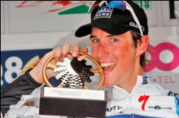

Alberto Contador
 De: La Frikipedia, la enciclopedia extremadamente seria.
De: La Frikipedia, la enciclopedia extremadamente seria.
De la serie grandes personajes:
Las armas las carga el diablo y las descarga Alberto Contador
| Nacimiento
|
30 de febrero
|
| Muerte
|
Cuando le gane los hermanitos (Veasé Nunca)
|
| Ocupación
|
Ciclista
|
| Nacionalidad
|
 Aspaña Aspaña
|
| Malo o bueno
|
Bueno como dominador del mundo y regular tirando para abajo como ciclista
|
| Atentados contra la humanidad
|
Matar a varias personas con bidones y con su pistola
|
| Religión
|
Pistolismo
|
| Notas
|
Sabe contar
|
«1...2, ...4, ...3, ...8, ... ¡6!»
~ Alberto Contador contando las grandes vueltas que lleva ganadas
«Tenemos que correr con fair-play»
~ Alberto Contador acobardándose de Andy Shreck
«Voy a atacarle hasta cuando vaya a mear»
~ Alberto Contador después de que atacará cuando Contador se había caído
Alberto Contador es un asesino en serie ciclista profesional que corre en un equipillo danés llamado SaxoTinkoff (en español: Sexo con Oleg Tinkoff). Ha nacido en un pueblo de Madrid llamado Pinto. Ha ganado 3 "tur", 2 "yiro" y una "vuelta".
Dicen los entendidos del ciclismo (Mariano Rajoy y Darth Vader) que es el mejor ciclista en actualidad.
Biografía

Contador ganando el Tour de Italia, ¿algo que objetar?
Alberto Contador, más conocido como Abierto el Contador de la Luz o Alberto Corredor (según Carlos de Andrés cuando tiene un día malo con los lapsus) nació un 30 de febrero de cualquier año (pongamos que fue el 1979). Era el hermano pequeño de Papa Pitufo y de Bob Esponja Nació en un pueblecito de mala madre llamado Pinta. Él es el odiado del pueblo porque solo sabía contar, no pintar. Desde pequeñito ya sabía contar hasta un millón y enseñó a sumar a alumnos repetidores como Albert Einstein, Doctor Maligno, y Mourinho. Con 13 años, su hermano Bob, le animó a montar A Elsa Pataky en bicicleta. No era una estrellita pero sabía dar pedales que eso ya era mucho. Un día, mezcló redbull con doping y se lo metió en la sangre. Se puso tan salido que se pegó una hostia que se abrió la cabeza y el monstruo de las galletas se puso a comer el serrín que había. (Había escasez de galletas por esa zona) Sin nada en la cabeza, le pusieron el cerebro del primo del fontanero del abuelo del conocido de la hermana del amante del tío de Chuck Norris. Se volvió un supervillano en su otra vida, en un pequeño fallo en el trasplante. Cada dos por tres saca su pistola y se pone a matas a todo quisqui. Pasó de Discoveri Chanel a Hasta ná y tras 3 años, sl Sexo con Oleg Tinkoff, siendo una futura promesa llegando a ganar 3 Vueltas a Francia, 2 Tours de Italia y un Giro de España. Cuando ganó su 3ª Vuelta a Francia, se fue a Irún (al País Vasco) y claro, un filete tiene que ser un filete, y al parecer tenía 0, 000000000000000000000000000000000000000000000000000000000005 de clembuterol, una gran cantidad minúscula pero por ser Contador se ignoró y el chino del RadioShack-o se tuvo que aguantar. Este chino fundó la セゼソゾタダチヂヴヵヶヷヴヵヶヷ (Odiamos a Alberto Contador y vamos a matarle y comernos un gato para vengarnos) y actualmente contiene 2 miembros.
 ¡¡Voy a matar a Contadoor!! ¡¡¡Jahjahjah (risa malvada)!!!
Palmarés Completo
- 2 Vueltas a Francia con 1/2 de redbull en la sangre
- 1 Vuelta a Francia con 0, 0000000000000000000000000000000000000000000...5 de hemanatol
- 2 Tour de Italia siendo gay
- 1 Giro de España siendo cani
- Paris-Tiza (sin competencia)
- Vuelta Castilla la Vieja (sin competencia)
- Vuelta a Basque Country (sin competencia)
- Vuelta al Algarve (sin competencia)
- Marcha Cicloturista a Peñaseca
- Campeón del mundo en tiro al plato
El niño loco alemán de vacaciones por Francia,
intenta matar anima a Contador.
Enemigos
- Los hermanitos Shreck: Desde que le ganó a Andy, no ha parado de lloriquear, volviéndose loco y obsesionado con él, haciéndose villano. En conclusión, es el archienemigo del villano. Ahora corre en el RadioShack (Véase en español:RadioSaco) pero no nos confundamos, no corren como este animal. En las cronos, es un aunténtico manta, le gana hasta Sébastien Buemi con un triciclo. Su otro hermano, Francisco, es la marioneta de él, siendo un gregario amargado y malo.
- Alexander Vinokurov: Desde que le quitó la botella de vino, le odia a muerte. Es capaz de atacarle 1000000 veces para acabar con él. Actualmente corre en el Astaná (Véase en español: Hasta nada), siendo el puto jefe de este equipo, atacando a 3 kilómetros sin sentido y no parar hasta ganar. Simplemente, es compatriota de Borat
- Bob Esponja: Su hermano le quitó todo el protagonismo dando pedales, llegando a tal punto en que se convirtió en una esponja y se suicidio. No se sabe nada más de él.
- Restaurante "Simplatos": Le quedaron sin vajillas porque necesitaba práctica para el tiro al plato.
- Todos los habitantes de Pinto: No sabe pintar....
- Michael Rasmussen: El calvo danés era el puto amo pero llegó él, y le pegó una paliza de en sueño. Se empezó a obsesionar con él (como todos) y a fumar porros. En medio de una carrera, le pillaron con unas pilinguis y le expulsaron de su equipo. Antes corría en el Rabobank (Véase en español: Banco del rabo), ahora está en un equipo modesto, llamado Cristina Watches (Véase en español: Mirando a Cristina). Siendo el jefe del equipo.
Cosas en la que destaca
- Subir
penes puertos.
- Bajar
penes puertos.
- Saber andar en bicicleta.
- Tener la voz de después de comer chili y no encontrar hagua.
- Tener más dinero que IP anónima.
- Disparar más de 150 veces.
- Atreverse a cagar sin el pestillo puesto.
- Haber entrenado con Chuck Norris en su disparo.
- Poner un currículum en blanco, solo con el nombre, y tener trabajo.
- Ganar "4 carreras".
Galería
Declarando su amor a su ex-técnico, Juan Bruy Nell.
¿A que le matarías por esas 2 buenas razones?.
Alberto limpiándose de un escupitajo que le ha tirado Lanzado am Strong.
Alberto pensando si ha tirado de la cadena hoy.
¡¡¡Ahi va la ostia, Patxi!!! Uno se pone la txapela y se convierte, pues.
¿Sabías que.....
Qué mirada tan penetrante...
- ...le costó 47 años en enseñar a Mourinho a contar las copas que había ganado Pep Guardiola como entrenador?
- ...tiene una forma peculiar de ir en bicicleta, que se la copió a Cristiano Ronaldo?
- ...no tiene amigos? Se los come
- ...tiene mujer, y se llama Macarena?
- ...hizo un libro educativo y tuvo menos venta que la autobiografía de Yamcha?
- ...no existe, son los padres?
- ...si le das de comer después de medianoche se convierte en un gremlin?
- ...utiliza su mirada para hipnotizar al mundo?
- ...ha ganado casi todo lo que ha corrido?
Véase también
Enlaces Externos
Autor(es):
- AlonKka
- Generibot
- Sergioppz
- Jordicule5
Frikipedia 2005-2016, Licencia
GFDL 1.2 - Extraído por FrikiLeaks